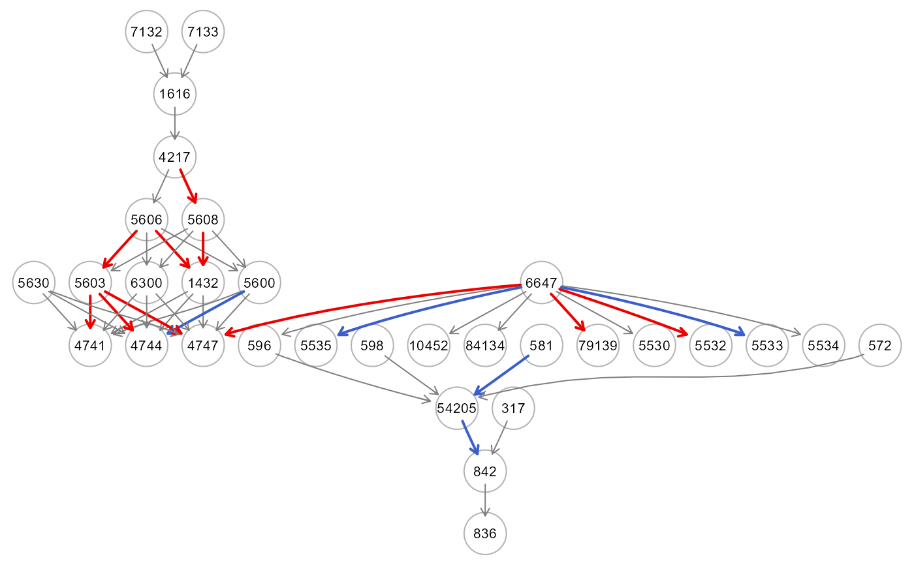
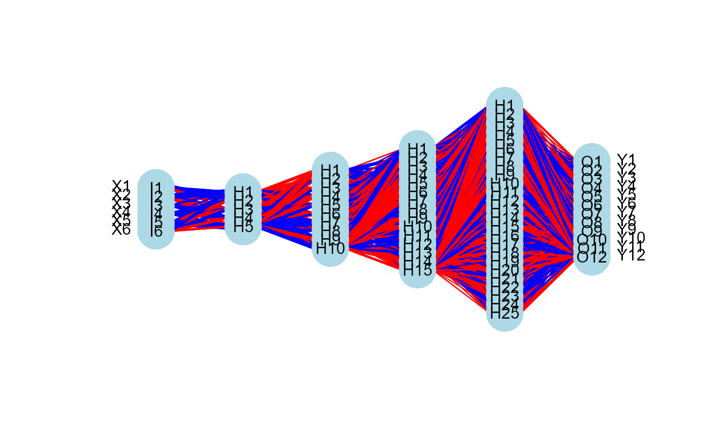
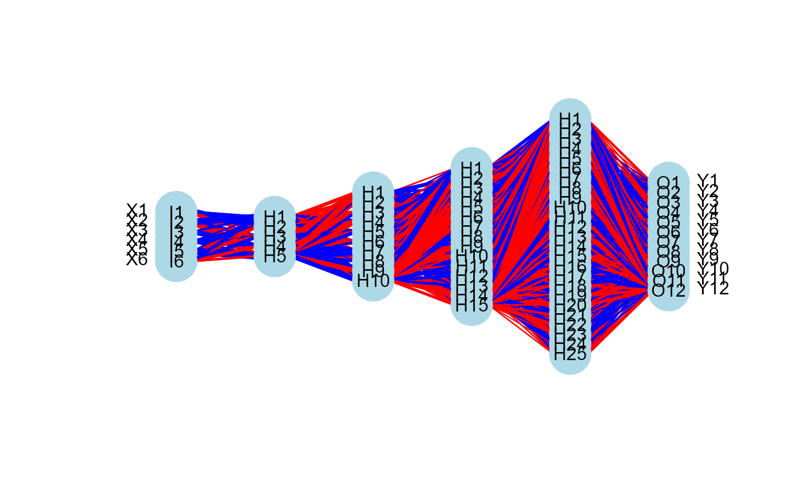

The function builds the topological layer (TL) ordering
of the input graph to fit a series of Deep Neural Networks (DNN)
models, where the nodes in one layer act as response variables (output)
y and the nodes in the sucessive layers act as predictors (input) x.
Each fit uses the dnn function of the cito R
package, based on the deep learning framework 'torch'.
The torch package is native to R, so it's computationally efficient and the installation is very simple, as there is no need to install Python or any other API, and DNNs can be trained on CPU, GPU and MacOS GPUs. In order to install torch please follow these steps:
install.packages("torch")
install_torch(reinstall = TRUE)
For setup GPU or if you have problems installing torch package, check out the installation help from the torch developer.
SEMdnn(
graph,
data,
train = NULL,
cowt = FALSE,
thr = NULL,
loss = "mse",
hidden = c(10L, 10L, 10L),
link = "relu",
validation = 0,
bias = TRUE,
lambda = 0,
alpha = 0.5,
dropout = 0,
optimizer = "adam",
lr = 0.01,
epochs = 100,
device = "cpu",
early_stopping = FALSE,
verbose = TRUE,
...
)Arguments
- graph
An igraph object.
- data
A matrix with rows corresponding to subjects, and columns to graph nodes (variables).
- train
A numeric vector specifying the row indices corresponding to the train dataset.
- cowt
A logical value. If
cowt=TRUEconnection weights of the input node (variables) are computing (default = FALSE).- thr
A numerical value indicating the threshold to apply on the absolute values of the connection matrix to color the graph (default = NULL).
- loss
A character value specifying the loss after which network should be optimized. The user can specify: (a) "mse" (mean squared error), "mae" (mean absolute error), or "gaussian" (normal likelihood), for regression problems; (b) "poisson" (poisson likelihood), or "nbinom" (negative binomial likelihood) for regression with count data; (c) "binomial" (binomial likelihood) for binary classification problems; (d) "softmax" or "cross-entropy" for multi-class classification (default = "mse").
hidden units in layers; the number of layers corresponds with the length of the hidden units. As a default,
hidden = c(10L, 10L, 10L).- link
A character value describing the activation function to use, which might be a single length or be a vector with many activation functions assigned to each layer (default = "relu").
- validation
A numerical value indicating the proportion of the data set that should be used as a validation set (randomly selected, default = 0).
- bias
A logical vector, indicating whether to employ biases in the layers (
bias = TRUE), which can be either vectors of logicals for each layer (number of hidden layers + 1 (final layer)) or of length one (default = TRUE).- lambda
A numerical value indicating the strength of regularization: lambda penalty, \(\lambda * (L1 + L2)\) (default = 0).
- alpha
A numerical vector to add L1/L2 regularization into the training. Set the alpha parameter for each layer to \((1 - \alpha) * ||weights||_1 + \alpha ||weights||^2\). It must fall between 0 and 1 (default = 0.5).
- dropout
A numerical value for the dropout rate, which is the probability that a node will be excluded from training (default = 0).
- optimizer
A character value indicating the optimizer to use for training the network. The user can specify: "adam" (ADAM algorithm), "adagrad" (adaptive gradient algorithm), "rmsprop" (root mean squared propagation), "rprop” (resilient backpropagation), "sgd" (stochastic gradient descent). As a default,
optimizer = “adam”.- lr
A numerical value indicating the learning rate given to the optimizer (default = 0.01).
- epochs
A numerical value indicating the epochs during which the training is conducted (default = 100).
- device
A character value describing the CPU/GPU device ("cpu", "cuda", "mps") on which the neural network should be trained on (default = "cpu")
- early_stopping
If set to integer, training will terminate if the loss increases over a predetermined number of consecutive epochs and apply validation loss when available. Default is FALSE, no early stopping is applied.
- verbose
If
verbose = TRUE, the training curves of the DNN models are displayed as output, comparing the training, validation and baseline curves in terms of loss (y) against the number of epochs (x) (default = TRUE).- ...
Currently ignored.
Value
An S3 object of class "DNN" is returned. It is a list of 5 objects:
"fit", a list of DNN model objects, including: the estimated covariance matrix (Sigma), the estimated model errors (Psi), the fitting indices (fitIdx), and the estimated connection weights (parameterEstimates), if cowt=TRUE.
“Yhat”, a matrix of prediction values of sink and mediator graph nodes.
"model", a list of all j=1,...,(L-1) fitted MLP network models.
"graph", the induced DAG of the input graph mapped on data variables. If cowt=TRUE, the DAG is colored based on the estimated connection weights, if abs(W) > thr and W < 0, the edge is inhibited and it is highlighted in blue; otherwise, if abs(W) > thr and W > 0, the edge is activated and it is highlighted in red.
"data", input training data subset mapping graph nodes.
Details
By mapping data onto the input graph, SEMdnn() creates a set
of DNN models based on the topological layer (j=1,…,L) structure of the input
graph. In each iteration, the response (output) variables, y are the nodes in
the j=1,...,(L-1) layer and the predictor (input) variables, x are the nodes
belonging to the successive, (j+1),...,L layers.
Each DNN model is a Multilayer Perceptron (MLP) network, where every neuron node
is connected to every other neuron node in the hidden layer above and every other
hidden layer below. Each neuron's value is determined by calculating a weighted
summation of its outputs from the hidden layer before it, and then applying an
activation function. The calculated value of every neuron is used as the input
for the neurons in the layer below it, until the output layer is reached.
References
Amesöder, C., Hartig, F. and Pichler, M. (2024), ‘cito': an R package for training neural networks using ‘torch'. Ecography, 2024: e07143. https://doi.org/10.1111/ecog.07143
Grassi M, Palluzzi F, Tarantino B (2022). SEMgraph: An R Package for Causal Network Analysis of High-Throughput Data with Structural Equation Models. Bioinformatics, 38 (20), 4829–4830 <https://doi.org/10.1093/bioinformatics/btac567>
Examples
# \donttest{
if (torch::torch_is_installed()){
# load ALS data
ig<- alsData$graph
data<- alsData$exprs
data<- transformData(data)$data
group<- alsData$group
#...with train-test (0.5-0.5) samples
set.seed(123)
train<- sample(1:nrow(data), 0.5*nrow(data))
#thr<- 1/sqrt(2*nrow(data[train, ])) #Joseph(2020, formula 22)
start<- Sys.time()
dnn0 <- SEMdnn(ig, data, train, cowt = TRUE, thr = NULL,
#loss = "mse", hidden = 5*K, link = "selu",
loss = "mse", hidden = c(10, 10, 10), link = "selu",
validation = 0, bias = TRUE, lr = 0.01,
epochs = 32, device = "cpu", verbose = TRUE)
end<- Sys.time()
print(end-start)
#str(dnn0, max.level=2)
dnn0$fit$fitIdx
dnn0$fit$parameterEstimates
gplot(dnn0$graph)
table(E(dnn0$graph)$color)
#...with a binary outcome (1=case, 0=control)
ig1<- mapGraph(ig, type="outcome"); gplot(ig1)
outcome<- ifelse(group == 0, -1, 1); table(outcome)
data1<- cbind(outcome, data); data1[1:5,1:5]
start<- Sys.time()
dnn1 <- SEMdnn(ig1, data1, train, cowt = TRUE, thr = NULL,
#loss = "mse", hidden = 5*K, link = "selu",
loss = "mse", hidden = c(10, 10, 10), link = "selu",
validation = 0, bias = TRUE, lr = 0.01,
epochs = 32, device = "cpu", verbose = TRUE)
end<- Sys.time()
print(end-start)
#str(dnn1, max.level=2)
dnn1$fit$fitIdx
dnn1$fit$parameterEstimates
gplot(dnn1$graph)
table(E(dnn1$graph)$color)
#...with input -> hidden structure -> output :
# source nodes -> graph layer structure -> sink nodes
#View topological layer (TL) ordering
dag<- graph2dag(dnn0$graph, data[train,])
L<- SEMdeep:::buildLevels(dag);L
K<- unlist(lapply(L, length));K
K<- rev(K[-c(1,length(K))]);K
ig2<- mapGraph(ig, type="source"); gplot(ig2)
start<- Sys.time()
dnn2 <- SEMdnn(ig2, data, train, cowt = TRUE, thr = NULL,
loss = "mse", hidden = 5*K, link = "selu",
#loss = "mse", hidden = c(10, 10, 10), link = "selu",
validation = 0, bias = TRUE, lr = 0.01,
epochs = 32, device = "cpu", verbose = TRUE)
end<- Sys.time()
print(end-start)
#Visualization of the neural network structure
nplot(dnn2$model[[1]], bias=FALSE)
#str(dnn2, max.level=2)
dnn2$fit$fitIdx
mean(dnn2$fit$Psi)
dnn2$fit$parameterEstimates
gplot(dnn2$graph)
table(E(dnn2$graph)$color)
}
#> Conducting the nonparanormal transformation via shrunkun ECDF...done.
#> 1 : z10452 z84134 z836 z4747 z4741 z4744 z79139 z5530 z5532 z5533 z5534 z5535

#> epoch train_l valid_l
#> 32 32 0.2292302 NA
#>
#> 2 : z842 z1432 z5600 z5603 z6300
 #> epoch train_l valid_l
#> 32 32 0.2360329 NA
#>
#> 3 : z54205 z5606 z5608
#> epoch train_l valid_l
#> 32 32 0.2360329 NA
#>
#> 3 : z54205 z5606 z5608
 #> epoch train_l valid_l
#> 32 32 0.2449019 NA
#>
#> 4 : z596 z4217
#> epoch train_l valid_l
#> 32 32 0.2449019 NA
#>
#> 4 : z596 z4217
 #> epoch train_l valid_l
#> 32 32 0.2934968 NA
#>
#> 5 : z1616
#> epoch train_l valid_l
#> 32 32 0.2934968 NA
#>
#> 5 : z1616
 #> epoch train_l valid_l
#> 32 32 0.2909994 NA
#>
#> DNN solver ended normally after 736 iterations
#>
#> logL: -32.64203 srmr: 0.0964083
#>
#> Time difference of 10.76691 secs
#> epoch train_l valid_l
#> 32 32 0.2909994 NA
#>
#> DNN solver ended normally after 736 iterations
#>
#> logL: -32.64203 srmr: 0.0964083
#>
#> Time difference of 10.76691 secs
 #> 1 : zoutcome
#> epoch train_l valid_l
#> 32 32 0.002971579 NA
#>
#> 2 : z10452 z84134 z836 z4747 z4741 z4744 z79139 z5530 z5532 z5533 z5534 z5535
#> epoch train_l valid_l
#> 32 32 0.2321097 NA
#>
#> 3 : z842 z1432 z5600 z5603 z6300
#> 1 : zoutcome
#> epoch train_l valid_l
#> 32 32 0.002971579 NA
#>
#> 2 : z10452 z84134 z836 z4747 z4741 z4744 z79139 z5530 z5532 z5533 z5534 z5535
#> epoch train_l valid_l
#> 32 32 0.2321097 NA
#>
#> 3 : z842 z1432 z5600 z5603 z6300
 #> epoch train_l valid_l
#> 32 32 0.2811348 NA
#>
#> 4 : z54205 z5606 z5608
#> epoch train_l valid_l
#> 32 32 0.2104915 NA
#>
#> 5 : z596 z4217
#> epoch train_l valid_l
#> 32 32 0.2811348 NA
#>
#> 4 : z54205 z5606 z5608
#> epoch train_l valid_l
#> 32 32 0.2104915 NA
#>
#> 5 : z596 z4217
 #> epoch train_l valid_l
#> 32 32 0.3153979 NA
#>
#> 6 : z1616
#> epoch train_l valid_l
#> 32 32 0.3153979 NA
#>
#> 6 : z1616
 #> epoch train_l valid_l
#> 32 32 0.3325882 NA
#>
#> DNN solver ended normally after 768 iterations
#>
#> logL: -32.15814 srmr: 0.0820331
#>
#> Time difference of 12.57297 secs
#> epoch train_l valid_l
#> 32 32 0.3325882 NA
#>
#> DNN solver ended normally after 768 iterations
#>
#> logL: -32.15814 srmr: 0.0820331
#>
#> Time difference of 12.57297 secs

 #> 1 : z10452 z84134 z836 z4747 z4741 z4744 z79139 z5530 z5532 z5533 z5534 z5535
#> 1 : z10452 z84134 z836 z4747 z4741 z4744 z79139 z5530 z5532 z5533 z5534 z5535
 #> epoch train_l valid_l
#> 32 32 0.4558655 NA
#>
#> DNN solver ended normally after 384 iterations
#>
#> logL: -20.97883 srmr: 0.1426717
#>
#> Time difference of 2.60942 secs

#> epoch train_l valid_l
#> 32 32 0.4558655 NA
#>
#> DNN solver ended normally after 384 iterations
#>
#> logL: -20.97883 srmr: 0.1426717
#>
#> Time difference of 2.60942 secs

 #>
#> gray50 red2 royalblue3
#> 38 13 21
# }
#>
#> gray50 red2 royalblue3
#> 38 13 21
# }